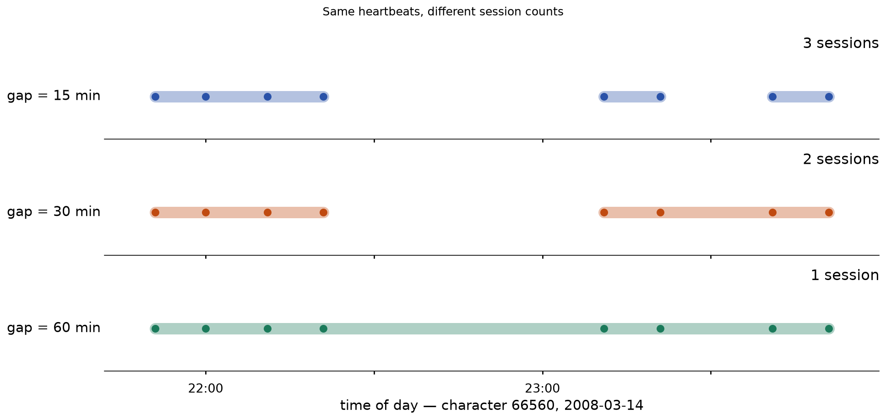

def filter_df_by_month(df, month):
return df.filter(pl.col("month") == month)
def build_feature_table(
historical_data,
session_gap=30,
use_location=True,
add_gini=False,
interval="1mo",
lags=(1, 2),
_fingerprint=None,
):
"""
Build the feature table for every (char, month) pair.
This function makes sure that we are only ever using historical data up to
the given month - 1 month. This is to avoid any leakage in the data.
It builds the table for every (char, month) pair a character could appear
in (not just the rows asked for by a given CV fold), because lagged
features need each character's full monthly timeline: a CV fold's X may
contain a single month (e.g. the test fold), which would otherwise leave
every lag/diff column null.
`_fingerprint` is unused; it only exists so that the cache key changes when
the code this function calls into changes (see `FEATURES_FINGERPRINT`).
"""
del _fingerprint
features_by_month = []
# Create a session encoder. The gap is a hyperparameter that can be tuned.
# This encoder is used as a stateless transformer so it is refitted for every
# month
session_encoder = SessionEncoder(
split_by="char", timestamp_col="timestamp", session_gap=session_gap * 60
)
historical_data = historical_data.with_columns(
month=pl.col("timestamp").dt.truncate(interval)
).lazy()
# Every (char, month) pair a character could appear in, whether or not they
# played that month: the full grid lag/diff features are built over.
user_month = build_churn_dataset(historical_data).select("char", "month").lazy()
# Adding fixed features: these features are fixed by character so they don't
# change over time.
user_month = user_month.join(
historical_data.select("char", "race", "charclass").unique("char"),
on="char",
how="left",
maintain_order="left",
).collect()
# This is used to add the historical data up to the given month.
# Sorting months is not needed, but forces a consistent order (better for debugging)
for month in user_month["month"].unique().sort():
this_month_X = filter_df_by_month(user_month, month)
# Selecting only the entries in the historical data from the month before
# the one I am building features for.
# This means that if the row's month is April, then the historical data
# is filtered to keep only the rows from March. Shifting the data forward
# by one interval and filtering on the current month is equivalent to
# saying "I want the rows for the current month - 1 month", but it's
# easier to implement
kept_historical_data = historical_data.with_columns(
pl.col("month").dt.offset_by(interval)
).filter(pl.col("month") == month)
# Session features: a session starts from a heartbeat, then it ends when
# no more heartbeats are detected for session_gap minutes
historical_data_sessions = session_encoder.fit_transform(
kept_historical_data.collect()
).lazy()
historical_data_sessions = get_session_duration(historical_data_sessions)
# General features: add session based and playerbase features
df_with_features = add_general_features(
this_month_X.lazy(), historical_data_sessions
)
# Location features can be useful but take much longer to generate
if use_location:
# Grouping by character and zone so that I can get the time spent in each zone
# Even if users leave the zone, this lets me find how much time a user spends in
# a given zone
session_encoder_zone = SessionEncoder(
split_by=["char", "zone"],
timestamp_col="timestamp",
session_gap=session_gap * 60,
suffix="session_id_zone",
)
# Zone-session features: a session lasts from the first time a character
# enters a zone to the moment it leaves it
# This is useful to get zone-specific features
historical_data_zone_sessions = session_encoder_zone.fit_transform(
kept_historical_data.collect()
).lazy()
historical_data_zone_sessions = get_session_duration(
historical_data_zone_sessions,
session_column="timestamp_session_id_zone",
)
df_with_features = add_location_features(
df_with_features,
historical_data_zone_sessions,
add_gini=add_gini,
)
else:
df_with_features = df_with_features.collect()
features_by_month.append(df_with_features)
assert len(df_with_features) == len(this_month_X)
feature_table = pl.concat(features_by_month, how="vertical")
to_fill = pl.col("monthly_total_session_duration", "monthly_avg_session_duration")
feature_table = feature_table.with_columns(
to_fill.fill_null(pl.duration(seconds=0))
)
if lags is not None:
feature_table = add_lagged_features(feature_table, lags=lags)
return feature_table
def add_features(X, feature_table):
"""Attach this CV fold's (char, month) rows to the precomputed features."""
return X.join(
feature_table, on=["char", "month"], how="left", maintain_order="left"
)Part 3 · Sessions, and the shape of the feature table
1 What the features describe
The features of a row at month M are computed from the activity of month M-1 only. They fall in a few groups:
- fixed attributes of the character: race and class;
- session features: skrub’s SessionEncoder groups consecutive heartbeats of a character into sessions, which gives the number of sessions in the month, and the total, average and standard deviation of their duration, and the average start and end time;
- player features: highest level, number of distinct zones and guilds, most frequent zone, first and last guild;
- playerbase features: average level and number of active players of the character’s class;
- optionally, location features: how rare the zones visited by the character are, how much time is spent in “hub” zones that everyone visits, and how evenly the time is spread across zones (Gini coefficient);
- lagged features: the value of every feature one or more months earlier, plus the month-to-month difference of numeric features, so that the model can see trends.
The functions that compute them live in adding_features.py. The function below loops over the months, and for each one filters the historical data down to the previous month before building the features. Because lagged features need each character’s complete timeline, the feature table is built once for every (character, month) pair, independently of the cross-validation split, and each split only selects its rows from it.
2 Sessions
We first need to define what a “session” is in this context.
The reason we need sessions is because we have access to heartbeats, which only tell us that the avatar was online at the time of the poll. They do not give us unformation about when the player logged in, logged out, or how many sittings a player had through a month.
We use the SessionEncoder to add a “session ID” feature to the feature matrix, which is then used as the base feature for all the other session features.
2.1 The rule
Important
A session is a run of heartbeats in which consecutive beats are at most session_gap apart. One character’s beats are sorted by time, the gap to the previous beat is computed, and every gap larger than the threshold opens a new session.
session_encoder = SessionEncoder(
split_by="char", timestamp_col="timestamp", session_gap=session_gap * 60
)
beats = session_encoder.fit_transform(month_of_heartbeats)The SessionEncoder is stateless: its functionality is limited to adding a column (timestamp_session_id) to each row, while keeping the other values and the row order unchanged. This also means that the encoder needs to be refit for each month: sessions are a property of the data, rather than a fixed transformation.
2.2 Choosing the session gap
Given that polls are executed with a ten-minutes cadence (with some variance), a gap of 10 minutes is expected of all players and thus does not mean anything; a gap of multiple hours instead means that the player took a break.
The actual value is a modelling decision that can be tuned along all other hyperparameters thanks to the skrub choices:
session_gap = skrub.choose_from([30, 45, 60], name="session_gap")15 minutes is deliberately not offered. Heartbeats arrive roughly every ten minutes, so a 15-minute threshold splits a session whenever a single poll is missed: only 53.8% of gaps are at most 10 minutes, so the threshold would be cutting through the middle of the distribution rather than separating “still playing” from “took a break”. At 30 minutes 91.1% of gaps stay inside a session, and at 60 minutes 92.0%.
The zone-level encoder has its own gap (zone_session_gap), because how long a character stayed in one zone is a different process from how long they played. "same" reuses session_gap, which is the historical behaviour.
On the 2008 data, the vast majority (83.6%) of consecutive-heartbeat gaps are within 15 minutes, while 91.0% of the gaps are within 60. Their effect on the features is real but not dramatic: over March 2008 a character-month has a median of 4 sessions at any of the three gaps, and the mean falls from 15.2 at 15 minutes to 12.0 at 60.
2.3 What one night looks like
Character 66560 on 2008-03-14, with session_gap = 30 minutes. The 50m 14s gap crosses the threshold and opens a second session; the 20m 18s gap does not:
| beat | gap to previous | session |
|---|---|---|
| 21:51:06 | — | 0 |
| 22:00:50 | 9m 44s | 0 |
| 22:11:23 | 10m 33s | 0 |
| 22:21:07 | 9m 44s | 0 |
| 23:11:21 | 50m 14s | 1 |
| 23:21:04 | 9m 43s | 1 |
| 23:41:22 | 20m 18s | 1 |
| 23:51:05 | 9m 43s | 1 |
The same heartbeats at 15 and 60 minutes give three sessions and one session respectively:

2.4 From sessions to one row per month
Sessions are only an intermediate: the model consumes one row per (character, month), so the sessions are collapsed by add_session_features. Character 66560 has 9 sessions in March 2008:
| session | start | end | duration |
|---|---|---|---|
| 0 | 03-01 09:08 | 03-01 11:38 | 2h 30m |
| 1 | 03-01 22:28 | 03-01 22:28 | 1m |
| 2 | 03-05 21:41 | 03-05 22:21 | 39m 45s |
| 3 | 03-08 10:40 | 03-08 11:31 | 50m 14s |
| 4 | 03-09 08:41 | 03-09 11:31 | 2h 50m |
| 5 | 03-09 12:11 | 03-09 13:41 | 1h 30m |
| 6 | 03-14 21:51 | 03-14 22:21 | 30m 01s |
| 7 | 03-14 23:11 | 03-14 23:51 | 39m 44s |
| 8 | 03-15 11:11 | 03-15 11:41 | 29m 57s |
which become the features attached to that character’s April row:
| feature | value |
|---|---|
monthly_num_sessions |
9 |
monthly_total_session_duration |
10h 01m |
monthly_avg_session_duration |
1h 07m |
monthly_std_session_duration |
58m 02s |
monthly_avg_session_start |
02:20 |
monthly_avg_session_end |
03:27 |
A detail to note is the fact that Session 1 has a duration of 1 minute: this is because it is a single heartbeat, and get_session_duration would assign it a duration of zero and it would look as if the player did not log in. A duration of 1 minute ensures this difference is noticeable.
2.5 Sessionizing to generate complex features
A second sessionization is executed to add location features, by running a new SessionEncoder with split_by=["char", "zone"], producing timestamp_session_id_zone. Those sessions measure how long a character stayed in a given zone, not how long they played, and they are what the location features are built on: time spent per zone, how much of it lands in “hub” zones that everyone visits, and how evenly it is spread.
session_encoder_zone = SessionEncoder(
split_by=["char", "zone"],
timestamp_col="timestamp",
session_gap=session_gap * 60,
suffix="session_id_zone",
)
Note
Diagram of the session-based features (click to expand)

3 The loop that builds the table
The next part takes the optional block on the list — location features — and asks whether it earns its place.